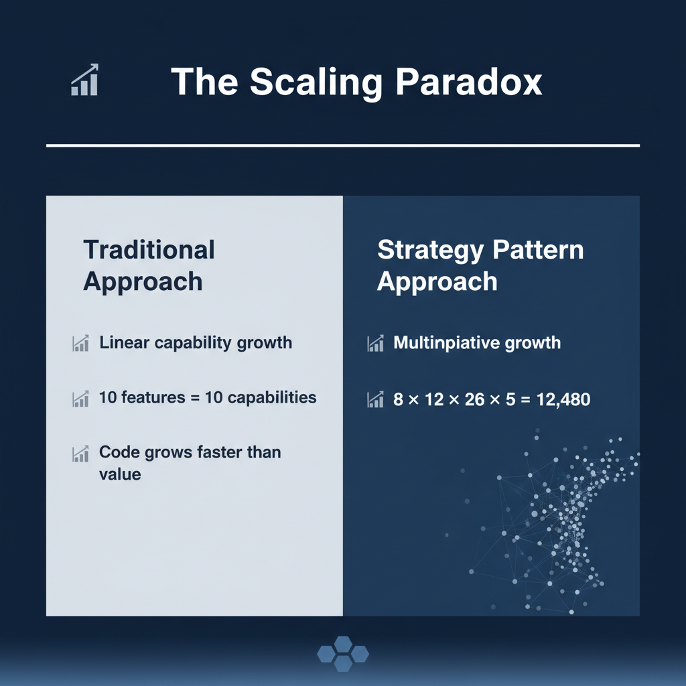
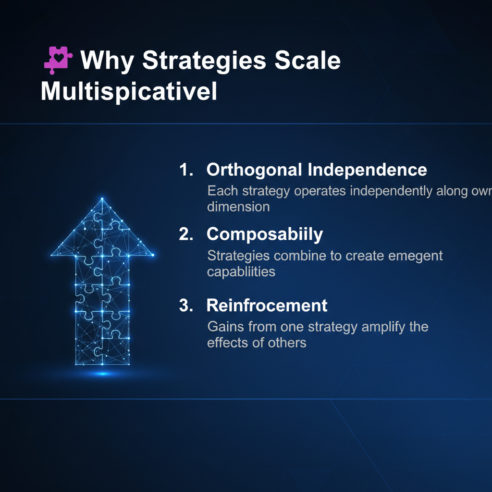
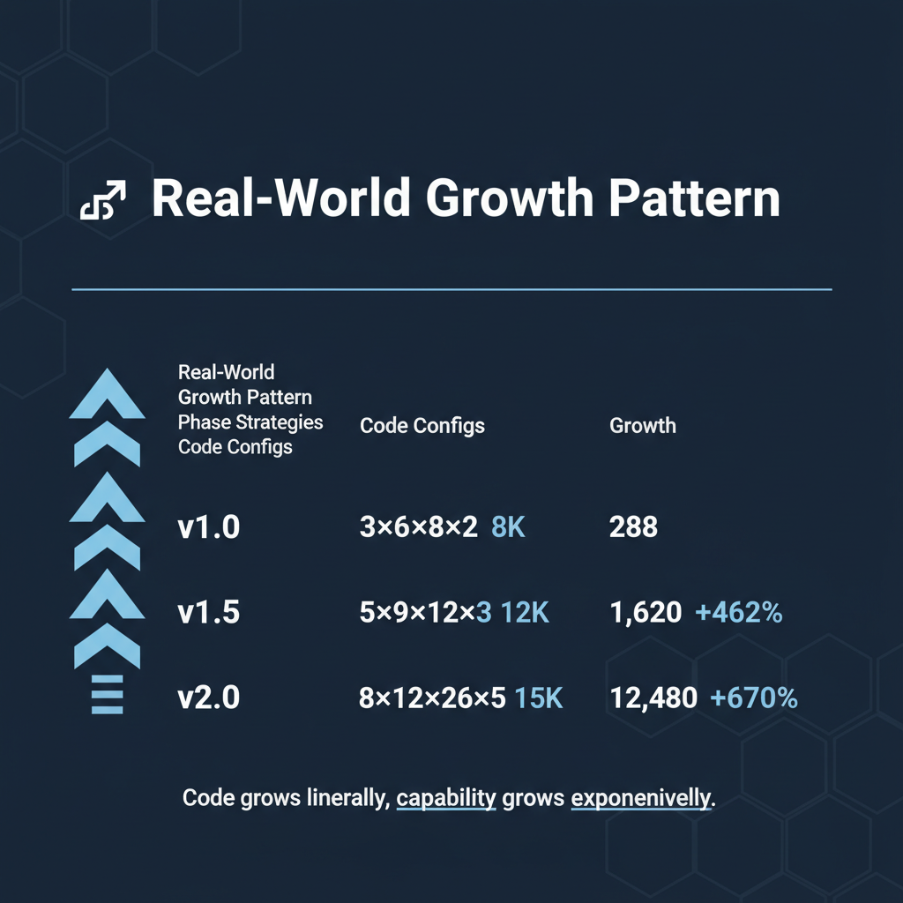
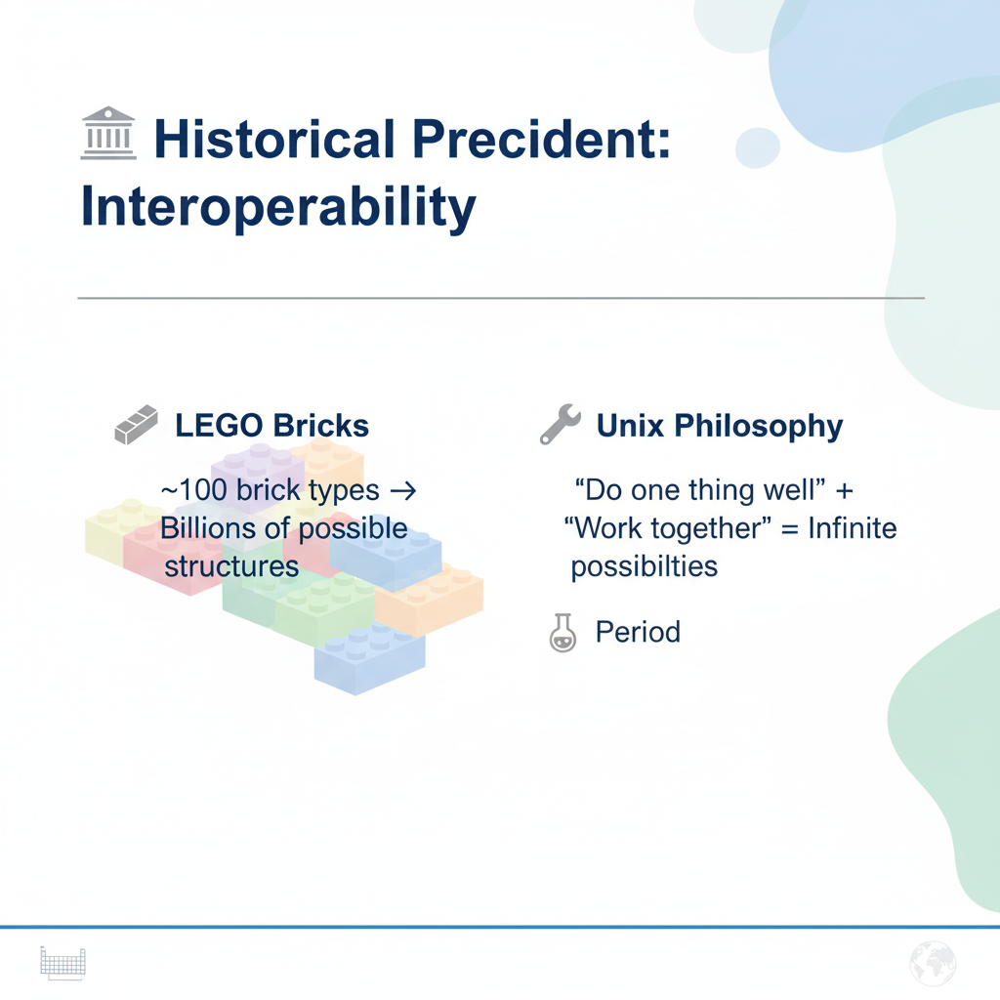

Building Scalable AI Systems Through Smart Design Patterns
From Linear Growth to Exponential Capability

Total Capability = Product of Strategy Families
8 API Providers × 12 Chat Models × 26 Task Types × 5 Processing Strategies
= 12,480 Configurations
Add 1 new API Provider → +1,560 new capabilities (+12.5%)
Add 1 new Task Type → +480 new capabilities (+3.8%)

Each strategy operates independently along its own dimension
Strategies combine to create emergent capabilities
12,480+ capabilities from ~50,000 lines of code
Capability Density = 0.25 capabilities per line

| Phase | Strategies | Code | Configs | Growth |
|---|---|---|---|---|
| v1.0 | 3×6×8×2 | 8K | 288 | — |
| v1.5 | 5×9×12×3 | 12K | 1,620 | +462% |
| v2.0 | 8×12×26×5 | 15K | 12,480 | +670% |
Code grows linearly, capability grows exponentially
OpenAI, Anthropic, Google, AWS, Groq, Ollama, Mistral, DeepSeek
GPT-4, Claude, Gemini with token limits & pricing
26+ reasoning patterns: Chain-of-Thought, Systems Thinking, Ethical Reasoning
Seed, Fetch, and Processing strategies for web crawling
Result: 6 task types → 26+ implementations in weeks, not months

~100 brick types → Billions of possible structures
"Do one thing well" + "Work together" = Infinite possibilities
118 elements → Millions of compounds → Infinite materials
Small set of orthogonal components → Exponential combinations
12,480 configurations can overwhelm users
"In a well-designed strategy system, adding one new strategy doesn't just add one new capability—it multiplies capability across all existing strategies, creating exponential growth from linear code additions."
Build systems that scale with you, not against you.